Training an NLP Chatbot with ULMFiT and BERT — and Deploying to the Cloud
Chatbots are widely becoming adopted by businesses in sectors such as Banking and Financial Services to automate and scale customer service areas that previously required live agents to support.
The automated detection and calibrated response to real-time customer queries can have an enormous financial impact in terms of revenue (i.e. lead generation, sales and marketing optimization) and cost savings (agent headcount, customer retention) when trained and deployed effectively.
The Machine Learning (ML) sub-field of Natural Language Processing (NLP) and within it, Intent Classification, provides tools and techniques to create effective and highly accurate customer response and routing workflows that can benefit business organizations.
Our final project focuses on Transfer Learning involving the training of an intent classification machine learning model within a chatbot user interface for banking and financial services.
Our data source is a subset of An Evaluation Dataset for Intent Classification and Out-of-Scope Prediction (Stefan et al, 2019) from which we selected domains related to banking and financial services.
We provide an architectural overview of our machine learning system and in the evaluation, we compare the performance of two state of the art NLP models, namely BERT and ULMFiT. Further, we propose a novel methodology to semi-automatically improve the out-of-scope accuracy for NLP based classifiers.
Lastly, we provide a live deployment of our machine Learning system comprised of a web application and cloud-hosted model as it would be deployed and operational for a banking and financial services website.
-

ULMFiT
We showcase how to build an intent classification model using Fastai's ULMFiT approach for a domain specific dataset, that can be exported and integrated with chatbot web application. See more on ULMFiT. -
BERT
We also have explored and present a multi class intent classifier built using Hugging Face pretrained BERT implementation. See more on BERT. -
Novel Methodology to Improve Out-of-scope Accuracy
A robust task-oriented dialogue system is expected to have good accuracy for both in-scope intent classification and those that are out-of-scope as a chatbot that is not capable of identifying out of scope queries correctly can potentially waste a lot of customer and the business’s time. Previous work (Stefan et al, 2019) have identified this as a problem with state-of-the art NLP techniques. In this work, we propose a novel methodology to solve this pain point and improve out of scope accuracy by up to 1.8X. See more on Improving Out-of-scope accuracy. -
Deploying the Model
We deployed the Fast.ai/PyTorch models served through a Python web application on the Google App Engine Flexible hosting environment. The models are hosted within the application, which takes input text, evaluates the classification against our pre-trained models, and renders its result to the user in a conversational interface. See more on Deployment.
ULMFiT
Overview
Language Model Pre-Training
Language Model Fine-Tuning
Target Intent Classification
Data Preparation
Language Model Training & Tuning
Classifier Training & Tuning
Results
Code
Fast AI’s Universal Language Model FIne-Tuning (ULMFiT), is a popular transfer learning technique in the field of Natural Language Processing (NLP) that can be used to perform NLP related tasks such as text generation, sentiment analysis and intent classification. In general, training a model on large datasets can be very expensive in terms of time and compute resources. ULMFiT provides a way to overcome this challenge by offering a base model that is built on a significantly large dataset. Further, a NLP task based model can be built on top of this base model, by transfer learning the parameters of the underlying neural network and quickly training on a domain specific dataset of choice.
The basic idea behind the ULMFiT algorithm is as follows:
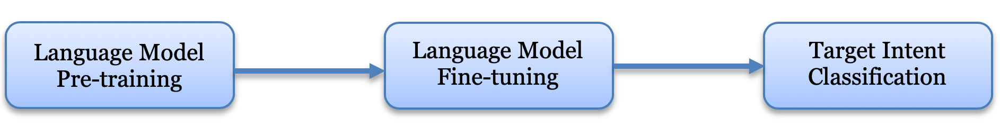Create a language model that predicts the next word of a given sentence by using a pretrained language model that is trained on a large corpus. In the case of ULMFiT, the large corpus is ‘WikiText-103’ which contains a pre-processed subset of 103 million tokens that were extracted from Wikipedia. It contains about 267,735 unique words. The purpose behind this step is to start with a model that recognizes English language and understands what the language describes.
Further, fine tune the language model using a target corpus. In our case we used a Banking and Insurance domain based intent classification dataset as the target corpus. By performing a self-supervised learning using the domain specific dataset, the language model also learns how intent based queries are formed in the specific domain.
From the fine-tuned language model, extract the encoder and then add a text classifier on top of it. And finally, fine tune this classification model to achieve the desired intent classification.
The architecture used for pre-training the Language Model is ASGD Weight Dropped – LSTM which is based on the work - Regularizing and Optimizing LSTM Language Models by Stephen Merity et al. (2017). Also, to avoid the problem of overfitting while fine-tuning the model on relatively smaller, domain specific datasets, the creators of ULMFiT are using techinques like discriminative fine-tuning, slanted triangular learning rates and gradual unfreezing.
The Banking & Insurance domain specific intent classification dataset was curated by manually perusing through the large crowdsourced data collection put together by Stefan et al. (2019) in their work and selecting only those query and intent combinations that come under the Banking and Insurance domain. The final dataset consisted of 35 intents including a separate class for out-of-scope queries. The out-of-scope queries are those that cannot be classified under any of the other existing intents. The idea of including out-of-scope queries into the dataset was also based on the work of Stefan et al. (2019).
The dataset consists of 6300 queries in total, classified across 35 intents. Out of the 6325 queries, 5000 queries were used for training, 1125 queries were used for validation and 200 queries were used for testing. The training dataset was composed by randomly selecting 115 queries from each intent type and selecting 1090 queries from the out-of-scope class. The validation dataset was composed by randomly selecting 30 queries for each intent type and 105 queries for the out-of-scope class. The test dataset was composed by randomly selecting 5 queries from each intent type and 30 queries from the out-of-scope class.
We start the training by importing the required libraries from Fast ai. The data in the CSV file is read and stored as a data class ‘TextDataBunch’, using the API’s provided by the fast.ai library. Further, a language model specific data bunch is created using the ‘TextLMDataBunch’ class with a batch size of 32. All the required pre-processing of text happens under the hood while creating the data bunch. Data is encoded by fast.ai in the form of tokens or tags. This process is called tokenization. All parts of the text including words, punctuations etc. are assigned a separate token. Next step is numericalization, where all the unique tokens are identified, and a list of these tokens are created. This list is referred to as the vocabulary. The tokens in the data are then replaced with the ID or location of where the specific token appears in the vocabulary.
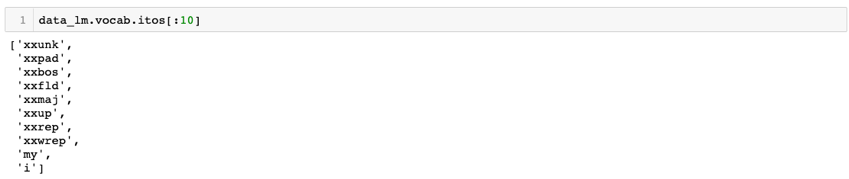
Further, we create the language model using the language_model_learner(). This will create an RNN (Recurrent Neural Network) behind the scenes. Also, while creating the model, we start with the pretrained model (WikiText-103) and transfer learn instead of starting with some random weights. While creating the learner, we pass the language model specific data bunch, information about the type of pretrained model that we want to use and set the dropout value to 0.3. The dropout is a hyper-parameter used for regularization. The dropout value should be reduced if the model is underfitting and increased if overfitting.
In order to fine tune the model, the optimum learning rate is identified using lr_find(). This fast.ai utility finds the best rate by searching through a series of learning rates. The plot for different learning rates perused, against loss can be visualized using recorder.plot(). From this plot we identify the learning rate for which the loss is at minimum. And, as a best practice this learning rate value is always reduced by a single magnitude and then set as the optimum value. In our case, the learning rate that had the lowest loss was 1e+00 and hence the optimum learning rate was set to 1e-01.
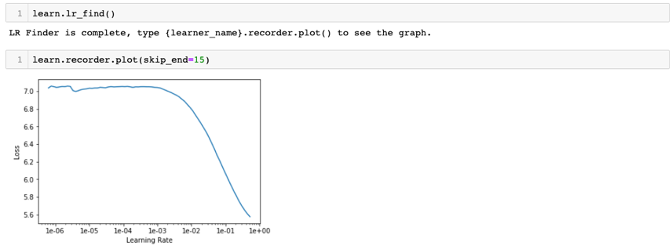After finding the optimum learning rate, we start training the model using fit_one_cycle(). The idea of using fit_one_cycle() which uses the one cycle policy callback instead of fit() has proven to be much faster and produce better results based on work published in this paper. For a single epoch, we got an accuracy of about 38%. We have only trained and fine-tuned the last layer. Now, we unfreeze all the layers and the train using unfreeze() and fit_one_cycle() with an epoch value of 10. The accuracy of the model increased to 43.6%, which is pretty good considering the domain specific nature of the dataset. We now test the language model by providing it with a few starting words of a domain specific query, specifying the total number of words and then asking it to predict.
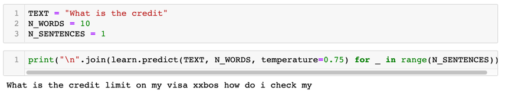The model does a reasonably good job in coming up with something that looks like a query in the banking or insurance domain. Since our final goal is not to build a text generation model but a classifier, this is acceptable.
We now build our intent classification model using the curated data set. The primary step is to save the encoder of the language model, which is a segment of the model that actually understands the structure of a sentence. Then we create a classification specific data bunch using ‘TextClasDataBunch’ and by passing the vocabulary that was created while building the language model. Next, we create the learner for the text classifier using the text_classifier_learner(). We pass the classification specific data bunch to the learner along with the setting the dropout value to 0.5. Also, the encoder saved from the language model is loaded as the pre-trained model.
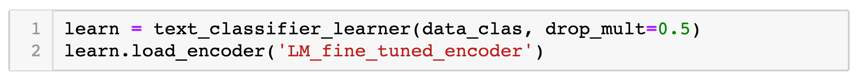We then fine tune the model by finding the optimum learning rate hyper parameter that minimizes the loss using lr_find() and recorder.plot(). The optimum learning rate value in the case of the classifier was found to be 2e-2. Finally, we train the classifier using the optimum learning rate value for 10 epochs and get an accuracy of about 92%. This was achieved within a training time of slightly less than a minute. Also, while training we set the momentums to 0.8 and 0.7. When the learning rate is smaller, we want to go faster in the same direction. However, when the learning rate is higher, in order to not overshoot, we reduce the momentum slightly.
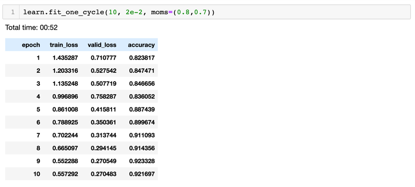We now have a pretty good model, but we want to fine tune it further. Instead of unfreezing all the layers at once, for text classification it is found to be helpful to unfreeze few layers one after another. Hence, we unfreeze the last two layers using freeze_to(-2) and train it again for a single epoch with momentums same as earlier. We use discriminative learning rates for this training, and this is done using slice(1e-2/(2.6**4),1e-2). This indicates that first layer’s learning rate is 1e-2/(2.6**4) and last layer’s learning rate is 1e-2 and the learning rate for the rest of the layers are geometrically evenly spaced. As we move from layer to layer, it has been found (by the founders of fast.ai) that for NLP RNN’s, decreasing the learning rate by 2.6 is effective.
After the first level of fine-tuning the accuracy increased to 92.6%. We repeat the same process by unfreezing one more layer and then finally unfreezing all the layers. The number of epochs and learning rate are set accordingly. The final training accuracy for the classification model is 95.5%.
Preliminary testing of the intent classifier model trained using ULMFiT showed that the model classified the queries provided correctly.
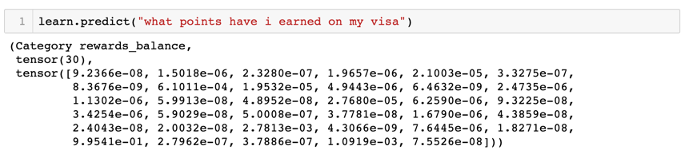The test dataset was separated into in-scope and out-of-scope queries and passed to the model to make predictions. The accuracy of the model was calculated as follows:
Accuracy (in %) = (Number of correct predictions / Number of total predictions) * 100
The in-scope accuracy of the model on the test set was 92.94% and the out-of-scope accuracy was 36.67%.
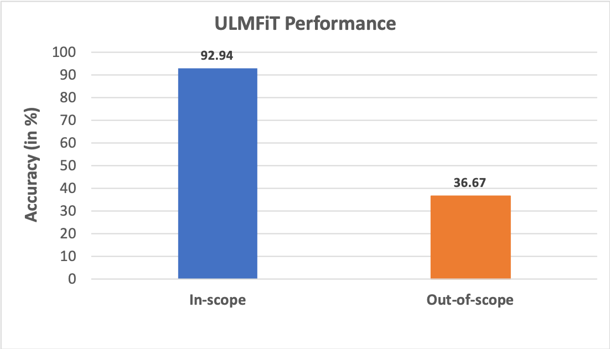Also, in order to do a straight forward comparison of the two approaches - ULMFiT and BERT, we used a common dataset consisting of in-scope queries spread across 10 domains, trained both the models using the dataset, passed a test set consisting of 300 queries to make predictions and calculated the in-scope accuracy. The results showed that BERT was better performant with an accuracy of about 97% in comparison to ULMFiT, which had an accuracy of about 89%.
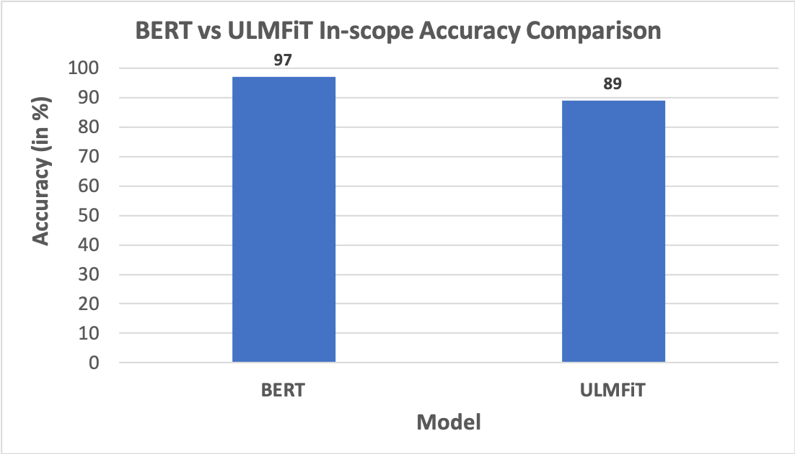The notebooks used to train the ULMFiT intent classifier model and the datasets are available here.
BERT
Overview
Bidirectional Encoder Representations from Transformers (BERT) is an attention based transformer approach that provides state-of-the-art pre-trained models for downstream tasks in Natural Language Processing (NLP) like intent classification. Transformer networks are built using attention-based learning techniques where it gathers information about the relevant context of a given word, and then encodes that context in a rich vector that represents the word. BERT’s key technique is applying bi-directional training of transformer attention model as opposed to the previous models which looks at a text sequence in one direction (left to right) or combined left to right and right to left for training.
Architecture
Context-free models such as word2vec generate a single word embedding representation for each word in the vocabulary so the word “bank” will have the same representation in “bank deposit” and “river bank”. However, Contextual models like BERT generate representations of each word in a sentence based on the other words in the sentence. To explain this further let’s look into the following sentence;
“I made a bank deposit”
The unidirectional models (left to right) the representation of the word “bank” is based on the words before it i.e. “I made a” and not the word “deposit” that comes after it. However, BERT represents the word “bank” using both its left and right context — I made a ... deposit —, hence its bidirectional.
BERT uses the following approaches to pre-train;
- To build bi-directional word representations it masks out 15% of the words in the input and then only predicts the masked words. For example;
- Inorder to learn the relationship between sentences, it trains on a simple task in which given two sentences A and B, predicting whether B is the next sentence after A or not. For example;
Input: transfer ten [MASK1] from my wells fargo [MASK2]
Labels: [MASK1] = dollars; [MASK2] = account
Sentence A: the man went to the bank.
Sentence B: he deposited ten dollars into his account.
Label: IsNextSentence
Sentence A: the man went to the bank.
Sentence B: penguins are flightless.
Label: NotNextSentence
Our approach
The BERT team has released several models out of which we have used “BERT-BASE, uncased” model which has 12-layer, 768-hidden, 12-heads, 110M parameters. Uncased means that the text has been converted to lowercase before WordPiece tokenization.
In our work, we adopted the usage of pre-trained BERT models and transfer learning concepts explained in this paper from Google AI Language. The BERT model was pre-trained using English Wikipedia (2,500M words) and BooksCorpus (800M words). BooksCorpus is a large corpus of books dataset gathered and used in this paper.
We have used simpletransformers a library built on top of huggingface transformers library to build a multi class intent classification on the banking domain dataset.
Data Pre-processing
We have extracted the banking domain related data for our intent classification task from the dataset mentioned in this paper - An Evaluation Dataset for Intent Classification and Out-of-Scope Prediction. This dataset contains 150 intents ranging across various domains, each intent consists of 100 training records, 20 validation records and 30 test records, all present in a single csv file. From this we used (data_pre_processing.ipynb) to extract the banking related intents into train.csv, val.csv and test.csv files. We also provided numeric coding mapping for each of the intents which is required for the BERT model.
Training and Tuning
For training the BERT model, we extracted 10 intents from the pre-processed dataset with each intent containing 100 records. The train.csv file has two columns viz. “text” column containing the text that need to be classified and “labels” column containing the numbers (0-9) that corresponds to each of the intents that text belongs as shown in the screenshot below;
We used a max sequence length of 128 for the input text with a training batch size of 5 and 4 epochs.
Results
The model did pretty well on the 300 records of the test set predicting correct classes for 291 records that is 97% accuracy. The screenshot below shows some of the correct and incorrect classifications
Correct predictions
Incorrect predictions
All the notebooks used for data preparation and training BERT for this intent classification and the datasets can be found here.
Improving Out-of-scope Accuracy
Motivation
Methodology
- For each in-scope intent, tokenize the intent names to identify domain specific keywords. (bill, interest, credit etc.)
- For each of these keywords, prepend it with preidentified mono, bi and trigram query starters (What is, How many etc.)
- Use the generational model to generate queries with N words for each of the identified strings from step 2 as the starter string
- Get the probability for the generated query from the model and use a threshold to automatically prune malformed queries
- For each of these generated queries, use human intervention or techniques like crowd sourcing to classify them as out-of-scope or into in-scope target intents
- Use the augmented data to train the final classifier
Evaluation
- Is the bill on my name?
- How can you get a bill to be cancelled?
- What is the procedure for making a bill into law?
- What is the meaning of bill?
Code
To understand why out-of-scope accuracy of such a classifier is important, let us consider a practical scenario wherein a chatbot is built for a banking application. The chatbot typically interacts with customers, identifies the intent of their queries and redirects them to the appropriate human representatives. Imagine how much time would be wasted for the customers and the bank representatives, if this system fails to identify the out-of-scope queries and keeps redirecting the customers to wrong representatives.
For the intent classifier model that we built using the ULMFiT technique using a curated Banking & Insurance domain specific dataset, recall that the accuracy of the model in identifying out-of-scope queries was significantly bad in comparison to the in-scope accuracy. The out-of-scope accuracy of the model turned out to be less than 50%. If such a model is deployed as the backend of the above mentioned chatbot application, one can imagine the trouble that is to be caused. Our results clearly correlated with the previous evaluations done by Stefan et al. (2019). Also, in their work Stefan et al., tried three different approaches to improve out-of-scope accuracy. Based on their research, the authors concluded that – “models that incorporate more out-of-scope training data tend to improve on out-of-scope performance”, and also, they call out that – “such data is expensive and difficult to generate”. In the rest of this section, we will understand the root cause of why such NLP models have low accuracy on out-of-scope queries and further propose a novel methodology to solve this problem.
To understand this problem further, let us consider the following out-of-scope query that was wrongly classified by the classifier model as the intent ‘bill_due’ with a probability of 0.64:
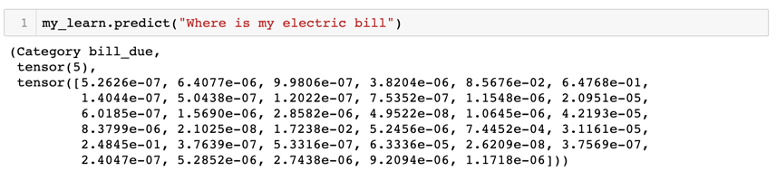If we take a close look at this query, we can see that though this query has the word bill, it is clearly in a different context compared to our target class “bill_due”. The reason for this wrong classification could be either because the pretrained language model missed to discern between multiple contexts for the word “bill” or that it did discern, but the fine-tuning phase resulted in losing these contexts. To understand this further, we did a simple experiment where we trained a separate intent classifier model where we did not use the step for fine tuning the language model using our target corpus and built the classifier directly on top of the language model pre-trained on Wikitext-103 dataset. When tested, this model had a better out-of-scope accuracy of about 53.33% compared to the 36.67% accuracy of the originally trained model.
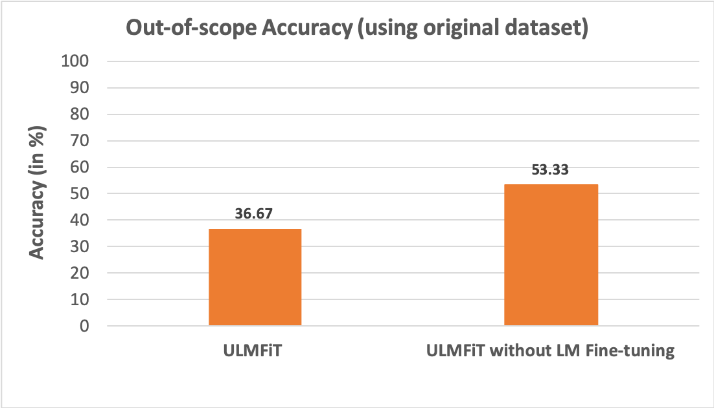This result proves the fact that the original model lost part of the context information due to some forgetting that happened during the fine-tuning phase. Hence, these models wrongly classify queries that are out-of-scope as in-scope just because they see some of the domain specific keywords in the query without discerning the context in which the word appears. Thus, the classifier built on top of the original pretrained language model did better in identifying those out-of-scope queries.
One other contributor to the inaccuracy in classifying out-of-scope queries could be from the fact that even if the language model had the smarts to discern between multiple contexts associated with domain specific keywords (like “bill”), it may have mapped multiple of these contexts to the wrong intent class in the last 2 layers of our model due to inadequate domain specific out-of-scope data to train on.
The obvious answer to solve both of the aforementioned issues is to add more queries to the training data for the out-of-scope class. Techniques like crowd-sourcing and manual data generation can be practical for in-scope target intents, but the task of finding all the different contexts for domain specific keywords that are out-of-scope can be quite tedious when done manually. Since we already have a generative language model that has been trained on a large corpus of general data, that has semantic knowledge about the various contexts for domain specific keywords (like “bill”), this model can be repurposed to also generate the target queries that can be further classified into the respective out-of-scope and in-scope intents with minimal human supervision. By doing this, we ensure that the all the contexts related to the domain specific keywords are retained in the fine-tuning phase and yet we have pruned our vocabulary for faster processing. To identify these domain specific keywords, we can take hints from the intent names or as direct input for each intent from the chatbot designers.
Algorithm to improve out-of-scope accuracy:
Simple illustration of how a query is generated using the algorithm:
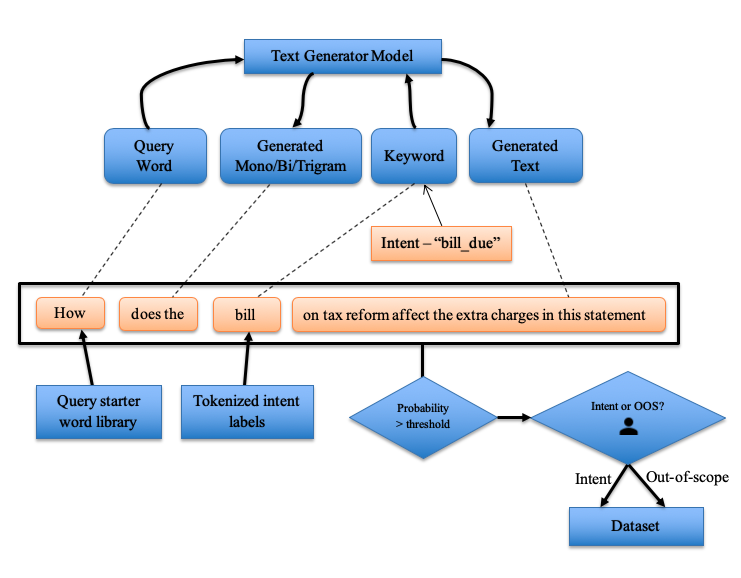Using the out-of-scope accuracy of 36.67% achieved using ULMFIT as the baseline, we used the aforementioned methodology to augment this data further and evaluate the improvement. For the data generation, we chose to use the Talk to Transformer model instead of our pretrained language model owing to better generational accuracy. Since we did not have probability information for the generated queries, we restricted the number of queries using a top-K approach. In this process, we generated 50 extra out-of-scope queries and augmented this to the original data set. In addition to this, we also manually curated a different set of out-of-scope queries by looking at the wrong classifications to provide an upper limit on the potential improvement that can be achieved using our methodology.
For the manual effort, we identified some of the prominent keywords that made the model classify a query as in-scope. For example, the dataset has three intents namely bill_due, bill_balance and pay_bill. The queries that can be classified as these intents have keywords like bill, balance, amount, due, deadline, pay, date etc., that the model looks for. We came up with queries that consisted of these keywords, but in different contexts. Some example out-of-scope queries that we created that consisted the word ‘bill’ are:
Also, it is important to note that not all of these keywords were misleading. The idea was to find only those misleading keywords and come up with queries that contain them and yet be classified as out-of-scope. This additional out-of-scope dataset that was manually curated consisted of 75 queries in total. We used the manually augmented dataset and the semi-automatically augmented datasets as input to the classifier model. The out-of-scope accuracy upon using the semi-automatically augmented dataset increased to 73.33% from 36.67% (original dataset). The model trained on manually curated dataset achieved an accuracy of 86.67%.
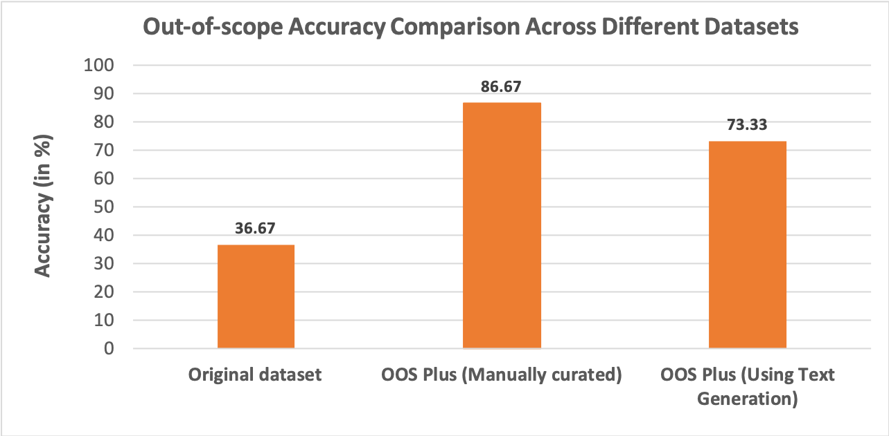Below is the example showing the new model correctly classifying the out-of-scope query with a high probability of 0.97.
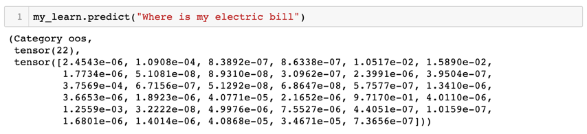The notebooks used to train the ULMFiT intent classifier model with better out-of-scope accuracy and the datasets with additional out-of-scope queries are available here.
Deploying the Model (to the Cloud!)
We used Python-based application frameworks (Starlette and Flask) with a Bootstrap frontend to implement the chatbot user interface. Our demo serves a Fast.ai/PyTorch model using the Starlette.io framework on the Google App Engine - Flexible infrastructure. Our initial version serves a pre-trained Scikit-Learn model using the Flask framework (and also hosts this blog).
We found interesting challenges with:
- GPU versus CPU-trained models: Since the deployment environment is CPU-based, the model export (.pkl) file needed to be trained on a CPU or with special instructions to ensure format compatibility.
- PyTorch versus Tensorflow models: Most environments that we tried preferred Tensorflow models. There seems to be increasing support for PyTorch-based deployments but the majority of services favored Tensorflow during our period of research.
- Production systems should run the same versions of Fast.ai and PyTorch as the system the model was trained on.
We ultimately deployed a PyTorch-based (Fast.ai) model and had success using the Google App Engine Flexible environment.
Application Architecture
The HTML form uses JavaScript to send the input text string (as a POST request) to a route (/create-entry) defined within our application. The handler function then performs an intent classification prediction of the message against our custom-trained model (which is read into the application as a .pkl file). The function then returns the output class prediction (via JSON) and renders the response in real-time to the user interface.
Google App Engine (Flexible)
Our demo using our custom PyTorch-based Fast.ai model is hosted on Google App Engine Flexible environment using a Python-based Starlette.io application. The Flexible environment provides support for the Fast.ai and PyTorch libraries without any special configuration, although it is a paid environment.
Google App Engine (Standard)
The Standard environment supports scikit-learn and Tensorflow model formats without any special configuration. Our initial version of the user interface implements a the Iris prediction model with a Python Flask application.
Observations
Google App Engine Flexible provided the most accommodating infrastructure for our Fast.ai/PyTorch model. Being a paid service, our Chatbot used resources amounting to around $3.63 per day.
Code and assets
- Our demo (Fast.ai/PyTorch) code
Future Work
- ULMFiT - We want to fully automate and open source our novel methodology to augment NLP training data using a generational model as an independent tool to the machine learning community. Further, we want to explore the domain of adversarial attacks using our core idea of a deploying generational NLP models.
- BERT - Fine-tune the TensorFlow implementation of the classifier using bert-tensorflow to improve the accuracy and host the model.
- Deployment - Build out the workflow for handling queries according to intent classifications, such as connecting inquiries to related knowledge bases and out-of-scope queries to agent queues for intervention.
Furthermore, I (Rajkumar) will be looking to extend this work to classify web content into custom taxonomy classes at my work. This will enable our organization to do automatic tagging of content to be able to find personalize for the web users.
References
- "Lesson 4: NLP; Tabular data; Collaborative filtering; Embeddings", Jeremy Howard, https://course.fast.ai/videos/?lesson=4
- "Universal Language Model Fine-tuning for Text Classification", Jeremy Howard, Sebastian Ruder, arXiv:1801.06146
- "An Evaluation Dataset for Intent Classification and Out-of-Scope Prediction", Stefan et. al, arXiv:1909.02027
- "A DISCIPLINED APPROACH TO NEURAL NETWORK HYPER-PARAMETERS: PART 1 – LEARNING RATE, BATCH SIZE, MOMENTUM, AND WEIGHT DECAY", Leslie N. Smith, arXiv:1803.09820
- "GPT-2 model - Talk to Transformers", Adam King, https://talktotransformer.com/
- Google-Research. “Google-Research/Bert.” GitHub, github.com/google-research/bert
- Huggingface. “Huggingface/Transformers.” GitHub, github.com/huggingface/transformers
- “Simpletransformers.” PyPI, pypi.org/project/simpletransformers/
- Deploying on Google App Engine